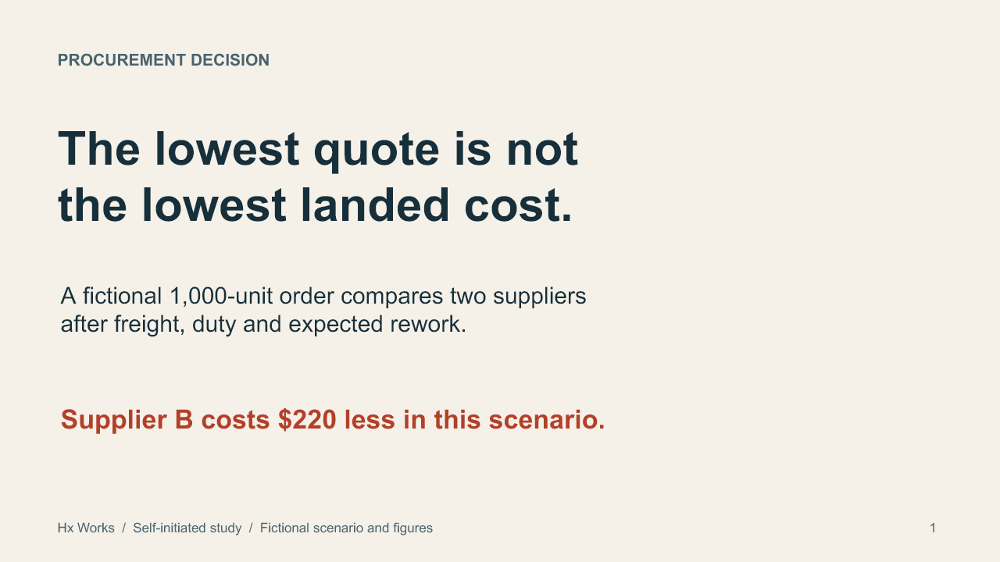
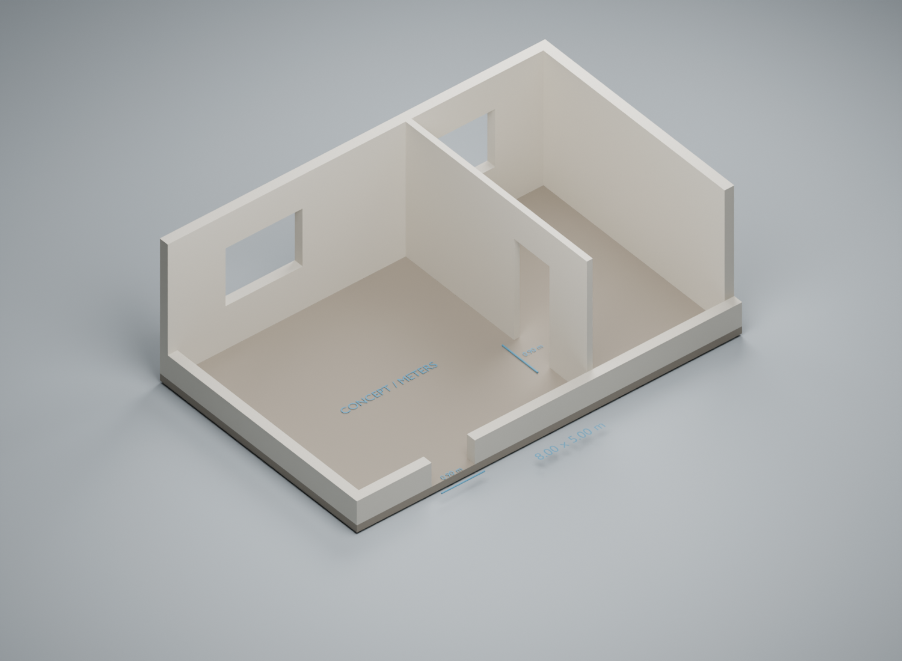

Isometric workflow
A silent six-second loop: request, validate, record, confirm. MP4 and an editable SVG still.
Open motion player →Project documentation
Selected Hx Works studies in browser behavior, editable presentations and 3D geometry.
Self-initiated studies with fictional or synthetic inputs. No paid client projects are presented here.
Svelte 5.23.2 · Controlled comparison
Recorded mock close() calls after component unmount
Both components reached setup-ready before unmount. In both cases, mounted DOM was removed and onDestroy ran. This is a summary of the controlled observation, not a live result panel.
A runnable comparison checks whether cleanup is actually called, rather than treating a destruction log as proof that every resource was closed.
A ControlledEventSource mock is used. Real HTTP/SSE traffic, memory retention and unmounting during pending setup were not tested.
Three-slide presentation · Fictional scenario

A short deck explains a supplier comparison, adds the landed costs, then states the threshold at which the recommendation changes.
The package and authoring-library import were checked. Desktop PowerPoint and arbitrary downstream conversions were not tested. The workflow uses code-based authoring and AI-assisted iteration.
Blender · Editable geometry and GLB

An 8.00 × 5.00 m conceptual layout uses separate, named closed wall elements. Door and window clearances can be inspected in the model, not just in its labels.
Concept geometry only: no building-code, structural, BIM/MEP or construction approval. Basic export scale was checked; this does not validate every property or target application. Authored with an AI-assisted Python/bpy workflow.
More project outputs
Existing code-authored studies with offline players, export files and source notes. No client campaign results are claimed.
A silent six-second loop: request, validate, record, confirm. MP4 and an editable SVG still.
Open motion player →Two six-second vertical studies in type, transitions and pacing.
Open both studies →The original twelve-second supplier comparison. Fictional quotes, MOQ and lead times.
Open original player →